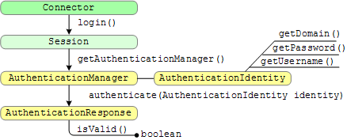

Google Search Appliance software versions 6.2
Connector manager version 2.4.0
Posted December 2009
The connector manager uses authentication when a user searches for secured access documents. The content management system prompts users for their user name and password before granting access to view the documents.
This section describes how to authenticate users to view secure documents. For connector terminology definitions, see the Google Enterprise Glossary. The Javadoc for the SPI is available in open source. For additional information, see Understanding Authentication and Authorization.
Chapters: Home, About This Guide, Introduction, Getting Started, SPI Overview, Traversing Documents,
Authentication, Authorization, Configuration, Appendix A: Building a Debug Connector Manager
You can authenticate users by implementing the AuthenticationManager interface.
The following illustration shows the call sequence:

The process is as follows:
Connector interface returns a Session object from the login method. Session interface in your connector to call the getAuthenticationManager method, which returns an AuthenticationManager object. AuthenticationManager interface provides the AuthenticationIdentity interface, which provides methods for getting the domain, username, and password strings. The AuthenticationIdentity interface provides the identity parameter for the call to the authenticate method of the AuthenticationManager interface. AuthenticationManager interface provides the authenticate method, which the connector manager calls when a user requires authentication to the content management system. The authentication response from the content management system can be either a true or a false response to the isValid function. A user must have the same user name and password at all content management systems served by the connectors that are associated with a single search appliance. That is, if you have two document sources that map to a user who has different credentials at each source, the search appliance can't serve from both sources.
The connector manager uses the search appliance's HTTP Basic mechanism to collect user name and password credentials from the user for searches.
Similarly, the search appliance authenticates a user for all content management systems on which the user has a user account.
A user never sees the results from a content management system if the user fails authentication. The search appliance requests credentials only once during a user session.
The following examples illustrate different examples of the TraversalManager.authenticate method.
The connector manager calls the authenticate method passing in a username and password as an AuthenticationIndentity object. The code creates a client at the content management system and gets server information back from the content management system, which either acknowledges that the credentials are correct or an exception throws to indicate a failed login attempt.
// Simplified Livelink authenticate() method.
public AuthenticationResponse authenticate(AuthenticationIdentity identity)
throws RepositoryLoginException, RepositoryException {
try {
Client client = clientFactory.createClient(identity.getUsername(),
identity.getPassword());
ClientValue serverInfo = client.GetServerInfo();
return new AuthenticationResponse(serverInfo.hasValue(), null);
} catch (RepositoryException e) {
throw new RepositoryLoginException("Authentication failed for " +
identity.getUsername(), e);
}
}
Login information is passed to the content management system and the authenticate method either verifies that the user is authenticated or an exception occurs to indicate a login failure.
// Simplified Documentum authenticate() method.
public AuthenticationResponse authenticate(AuthenticationIdentity identity)
throws RepositoryLoginException, RepositoryException {
ILoginInfo loginInfo = clientX.getLoginInfo();
loginInfo.setUser(identity.getUsername());
loginInfo.setPassword(identity.getPassword());
String docbaseName = sessionManager.getDocbaseName();
sessionManager.clearIdentity(docbaseName);
try {
sessionManager.setIdentity(docbaseName, loginInfo);
} catch (RepositoryLoginException e) {
return new AuthenticationResponse(false, null);
}
boolean authenticate = sessionManager.authenticate(docbaseName);
return new AuthenticationResponse(authenticate, null);
}
Example JAAS LDAP authenticate method, implements a
javax.security.auth.callback.CallbackHandler that supplies
the AuthenticationIdentity members to the JAAS LoginContext object.
import com.google.enterprise.connector.spi.AuthenticationIdentity;
import com.google.enterprise.connector.spi.AuthenticationManager;
import com.google.enterprise.connector.spi.AuthenticationResponse;
import com.google.enterprise.connector.spi.RepositoryLoginException;
import com.google.enterprise.connector.spi.RepositoryException;
import java.io.IOException;
import javax.security.auth.callback.Callback;
import javax.security.auth.callback.CallbackHandler;
import javax.security.auth.callback.NameCallback;
import javax.security.auth.callback.PasswordCallback;
import javax.security.auth.callback.UnsupportedCallbackException;
import javax.security.auth.login.LoginContext;
import javax.security.auth.login.LoginException;
public class JAASAuthenticationManager
implements AuthenticationManager, CallbackHandler {
private AuthenticationIdentity identity;
public AuthenticationResponse authenticate(AuthenticationIdentity identity)
throws RepositoryLoginException, RepositoryException {
try {
// Create a new LoginContext using this object as the authentication
// CallbackHandler, so it can supply the identity parameters; then
// login against our Example LDAP server using that identity.
this.identity = identity;
new LoginContext("ExampleLDAPConfiguration", this).login();
return new AuthenticationResponse(true, null);
} catch (LoginException le) {
throw new RepositoryLoginException("Authentication failed for " +
identity.getUsername(), le);
} catch (SecurityException se) {
throw new RepositoryLoginException("Authentication failed for " +
identity.getUsername(), se);
} finally {
this.identity = null;
}
}
// Authentication callbacks for the LDAP login module.
// Supply the username and password from the AuthenticationIdentity.
public void handle(Callback[] callbacks)
throws IOException, UnsupportedCallbackException {
for (int i = 0; i < callbacks.length; i++) {
if (callbacks[i] instanceof NameCallback) {
// Return the identity username.
NameCallback nc = (NameCallback)callbacks[i];
nc.setName(identity.getUsername());
} else if (callbacks[i] instanceof PasswordCallback) {
// Return the identity password.
PasswordCallback pc = (PasswordCallback)callbacks[i];
pc.setPassword(identity.getPassword().toCharArray());
} else {
throw new UnsupportedCallbackException
(callbacks[i], "Unsupported Callback");
}
}
}
}